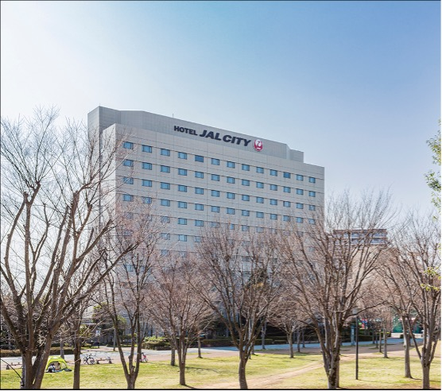
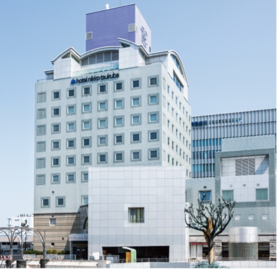
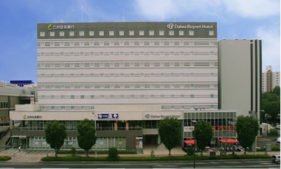
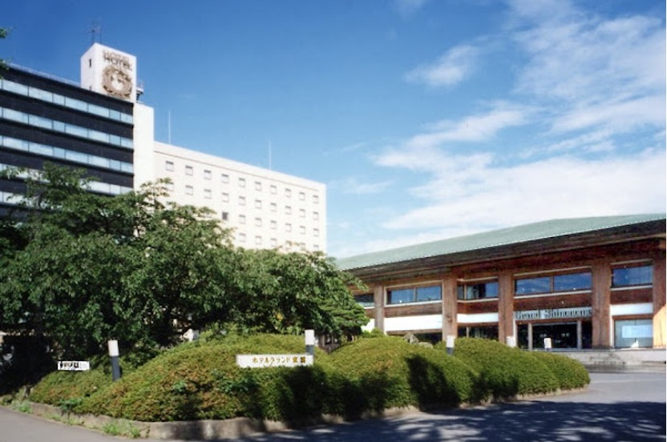
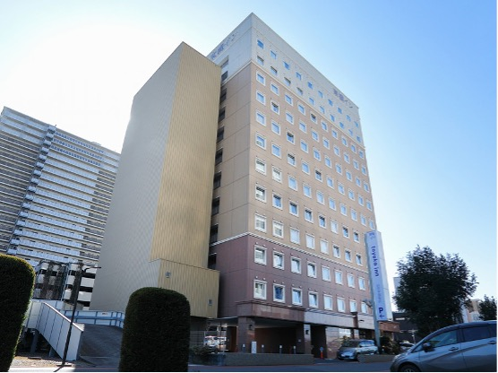
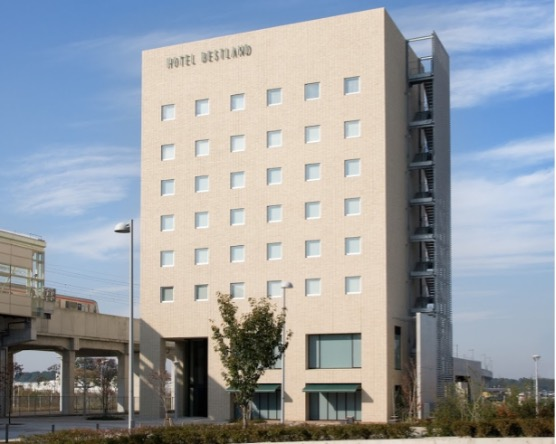
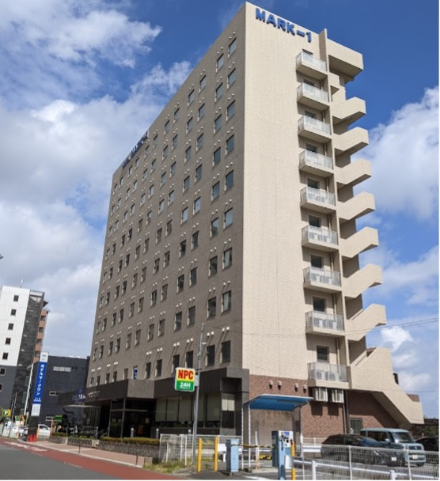

Accommodation
A. Hotel options within walking distance of the venue
-
Hotel JAL City Tsukuba (★★★)

-
Hotel Nikko Tsukuba (★★★★)

-
Daiwa Roynet Hotel Tsukuba (★★★)

-
Hotel Grand Shinonome (★★★)

B. Hotels near Kenkyu Gakuen Station (one stop from Tsukuba Station, you will need to take the TX train OR 40 min walk to attend the event)
-
Toyoko Inn Kenkyu Gakuen Ekimae (★★)

-
Hotel Bestland (★★★)

-
Hotel Mark-1 Tsukuba (★★★)
